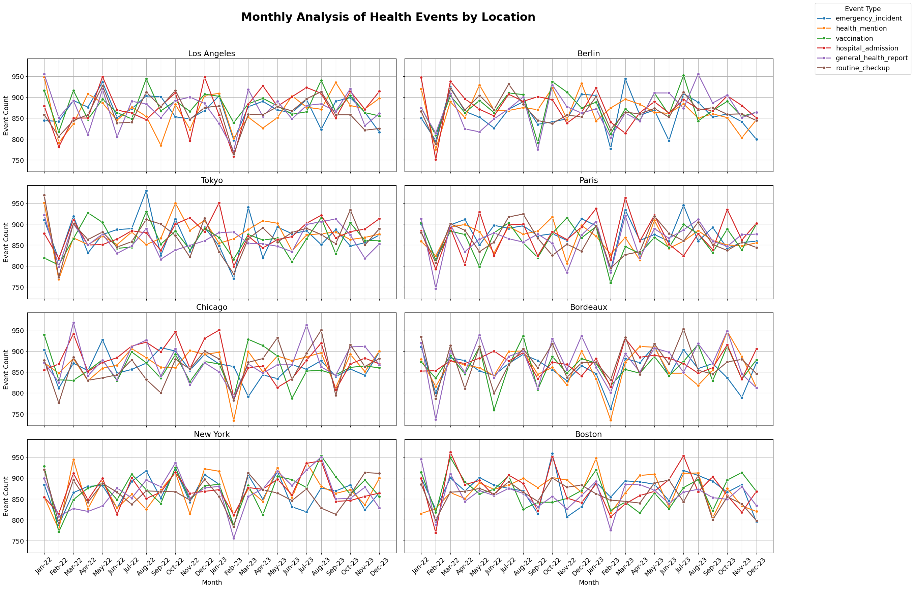

Section 1: Visualizations for Streaming Health Events
This graph displays the monthly fluctuations in various health event types in the dataset.
This graph displays monthly counts of different event types across multiple cities.

Section 2: Visualizations for Past Outbreaks
This dot plot charts the occurrence of outbreaks in various locations over time.
This line chart displays the number of outbreaks each month.
Section 4: Other Graphs
This pie chart displays the distribution of events across locations, event types and severity types.

This stacked bar chart plots the severity counts for different event types.
This stacked bar chart plots the severity counts for different locations.
This is a time series chart displaying weekly event frequency for different locations.